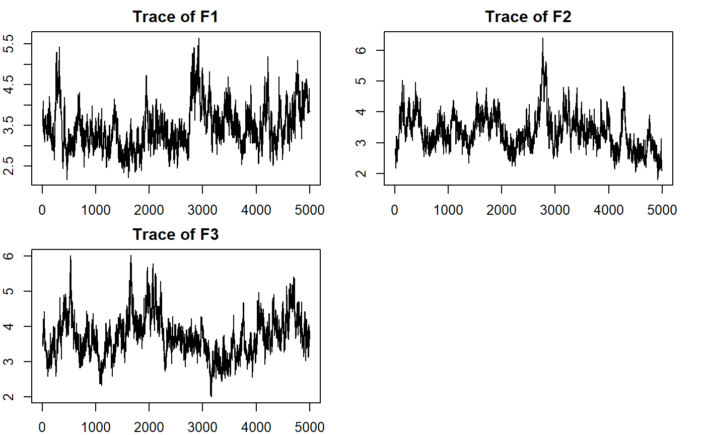
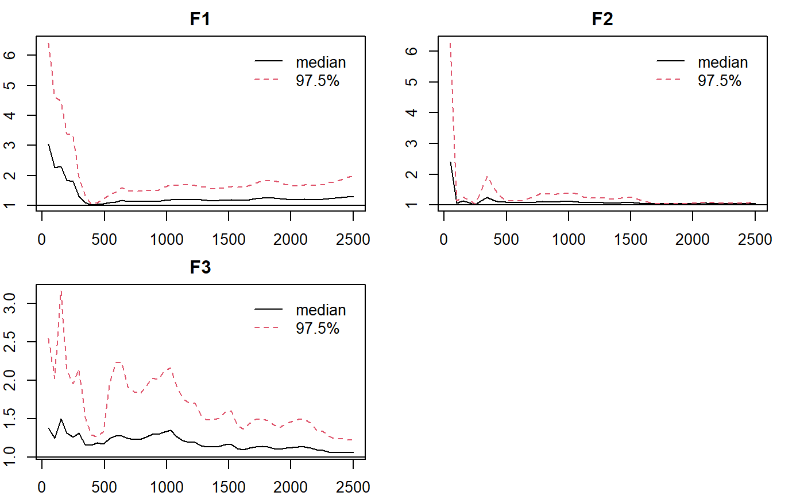

Note: the estimation process can be time consuming depending on the computing power. You can same some time by reducing the length of the chains.
library(LAWBL) dat <- sim18cfa0$dat J <- ncol(dat) # no. of items K <- 3 # no. of factors qlam <- sim18cfa0$qlam qlam #> [,1] [,2] [,3] #> [1,] 0.7 0.0 0.0 #> [2,] 0.7 0.0 0.0 #> [3,] 0.7 0.0 0.0 #> [4,] 0.7 0.0 0.0 #> [5,] 0.7 0.4 0.0 #> [6,] 0.7 0.4 0.0 #> [7,] 0.0 0.7 0.0 #> [8,] 0.0 0.7 0.0 #> [9,] 0.0 0.7 0.0 #> [10,] 0.0 0.7 0.0 #> [11,] 0.0 0.7 0.4 #> [12,] 0.0 0.7 0.4 #> [13,] 0.0 0.0 0.7 #> [14,] 0.0 0.0 0.7 #> [15,] 0.0 0.0 0.7 #> [16,] 0.0 0.0 0.7 #> [17,] 0.4 0.0 0.7 #> [18,] 0.4 0.0 0.7 Q<-matrix(-1,J,K); # -1 for unspecified items Q[1:2,1]<-Q[7:8,2]<-Q[13:14,3]<-1 # 1 for specified items Q #> [,1] [,2] [,3] #> [1,] 1 -1 -1 #> [2,] 1 -1 -1 #> [3,] -1 -1 -1 #> [4,] -1 -1 -1 #> [5,] -1 -1 -1 #> [6,] -1 -1 -1 #> [7,] -1 1 -1 #> [8,] -1 1 -1 #> [9,] -1 -1 -1 #> [10,] -1 -1 -1 #> [11,] -1 -1 -1 #> [12,] -1 -1 -1 #> [13,] -1 -1 1 #> [14,] -1 -1 1 #> [15,] -1 -1 -1 #> [16,] -1 -1 -1 #> [17,] -1 -1 -1 #> [18,] -1 -1 -1
m0 <- pcfa(dat = dat, Q = Q,LD = FALSE) #> #> Tot. Iter = 1000 #> user system elapsed #> 4.64 0.07 4.70 #> [,1] [,2] [,3] #> Feigen 3.323 2.577 3.291 #> NLA_lg3 8.000 8.000 8.000 #> Shrink 3.851 3.851 3.851 #> #> Tot. Iter = 2000 #> user system elapsed #> 9.02 0.07 9.08 #> [,1] [,2] [,3] #> Feigen 2.903 3.304 4.193 #> NLA_lg3 8.000 8.000 8.000 #> Shrink 2.636 2.636 2.636 #> #> Tot. Iter = 3000 #> user system elapsed #> 13.45 0.07 13.51 #> [,1] [,2] [,3] #> Feigen 2.772 3.243 3.514 #> NLA_lg3 8.000 8.000 8.000 #> Shrink 3.445 3.445 3.445 #> #> Tot. Iter = 4000 #> user system elapsed #> 17.83 0.07 17.89 #> [,1] [,2] [,3] #> Feigen 3.991 4.713 4.308 #> NLA_lg3 8.000 8.000 10.000 #> Shrink 3.201 3.201 3.201 #> #> Tot. Iter = 5000 #> user system elapsed #> 22.13 0.07 22.18 #> [,1] [,2] [,3] #> Feigen 3.552 2.764 3.614 #> NLA_lg3 8.000 8.000 8.000 #> Shrink 3.469 3.469 3.469 #> #> Tot. Iter = 6000 #> user system elapsed #> 26.70 0.07 26.76 #> [,1] [,2] [,3] #> Feigen 3.120 3.523 3.644 #> NLA_lg3 8.000 8.000 8.000 #> Shrink 2.995 2.995 2.995 #> Adj PSR 1.233 1.704 1.005 #> #> Tot. Iter = 7000 #> user system elapsed #> 31.16 0.07 31.22 #> [,1] [,2] [,3] #> Feigen 3.055 3.400 4.898 #> NLA_lg3 6.000 8.000 8.000 #> Shrink 3.511 3.511 3.511 #> Adj PSR 1.215 1.038 1.025 #> #> Tot. Iter = 8000 #> user system elapsed #> 35.42 0.07 35.48 #> [,1] [,2] [,3] #> Feigen 4.777 3.911 3.781 #> NLA_lg3 8.000 8.000 8.000 #> Shrink 2.938 2.938 2.938 #> Adj PSR 1.035 1.072 1.203 #> #> Tot. Iter = 9000 #> user system elapsed #> 40.06 0.07 40.12 #> [,1] [,2] [,3] #> Feigen 3.135 4.037 3.674 #> NLA_lg3 6.000 8.000 7.000 #> Shrink 3.863 3.863 3.863 #> Adj PSR 1.15 1.039 1.078 #> #> Tot. Iter = 10000 #> user system elapsed #> 44.70 0.07 44.76 #> [,1] [,2] [,3] #> Feigen 3.837 2.125 3.872 #> NLA_lg3 7.000 7.000 8.000 #> Shrink 3.318 3.318 3.318 #> Adj PSR 1.308 1.055 1.058 # summarize basic information summary(m0) #> $N #> [1] 500 #> #> $J #> [1] 18 #> #> $K #> [1] 3 #> #> $`Miss%` #> [1] 0 #> #> $`LD enabled` #> [1] FALSE #> #> $`Burn in` #> [1] 5000 #> #> $Iteration #> [1] 5000 #> #> $`No. of sig lambda` #> [1] 24 #> #> $`Adj. PSR` #> Point est. Upper C.I. #> F1 1.308183 1.990194 #> F2 1.054861 1.103524 #> F3 1.058274 1.223908 #summarize significant loadings in pattern/Q-matrix format summary(m0, what = 'qlambda') #> [,1] [,2] [,3] #> I1 0.7133091 0.0000000 0.0000000 #> I2 0.7222598 0.0000000 0.0000000 #> I3 0.7280720 0.0000000 0.0000000 #> I4 0.6843326 0.0000000 0.0000000 #> I5 0.7218921 0.3511857 0.0000000 #> I6 0.6927414 0.3691416 0.0000000 #> I7 0.0000000 0.7049908 0.0000000 #> I8 0.0000000 0.7616667 0.0000000 #> I9 0.0000000 0.7125699 0.0000000 #> I10 0.0000000 0.6528643 0.0000000 #> I11 0.0000000 0.6927721 0.4216320 #> I12 0.0000000 0.6673949 0.4700455 #> I13 0.0000000 0.0000000 0.6498391 #> I14 0.0000000 0.0000000 0.7000221 #> I15 0.0000000 0.0000000 0.7280201 #> I16 0.0000000 0.0000000 0.8032441 #> I17 0.3254804 0.0000000 0.7445459 #> I18 0.3192965 0.0000000 0.7361669 #factorial eigenvalue summary(m0,what='eigen') #> est sd lower upper sig #> F1 3.456654 0.5405621 2.552609 4.621831 1 #> F2 3.353781 0.5857038 2.323921 4.467973 1 #> F3 3.708205 0.5966391 2.641691 4.925321 1 #plotting factorial eigenvalue par(mar = rep(2, 4)) plot_eigen(m0) # trace

plot_eigen(m0, what='APSR')

Q<-matrix(-1,J,K); tmp<-summary(mod0, what="qlambda") cind<-apply(tmp,1,which.max) Q[cbind(c(1:J),cind)]<-1 #alternatively #Q[1:6,1]<-Q[7:12,2]<-Q[13:18,3]<-1 # 1 for specified items m1 <- pcfa(dat = dat, Q = Q) summary(m1) summary(m1, what = 'qlambda') summary(m1, what = 'offpsx') #summarize significant LD terms summary(m1,what='eigen') plot_eigen(m1) # trace plot_eigen(m1, what='APSR')
dat <- sim18cfa1$dat J <- ncol(dat) # no. of items K <- 3 # no. of factors sim18cfa1$qlam sim18cfa1$LD # effect size = .3 Q<-matrix(-1,J,K); # -1 for unspecified items Q[1:2,1]<-Q[7:8,2]<-Q[13:14,3]<-1 # 1 for specified items Q
m0 <- pcfa(dat = dat, Q = Q,LD = FALSE, burn = 10000, iter = 10000) summary(m0) summary(m0, what = 'qlambda') summary(m0,what='eigen') plot_eigen(m0) # trace plot_eigen(m0, what='APSR')
Q<-matrix(-1,J,K); tmp<-summary(m0, what="qlambda") cind<-apply(tmp,1,which.max) Q[cbind(c(1:J),cind)]<-1 Q m1 <- pcfa(dat = dat, Q = Q,burn = 10000, iter = 10000) summary(m1) summary(m1, what = 'qlambda') summary(m1,what='eigen') summary(m1, what = 'offpsx')